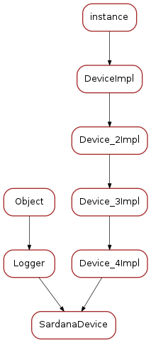

SardanaDevice¶
Generic Sardana Tango device module
Classes
SardanaDevice¶
-
class
SardanaDevice(dclass, name)[source]¶ Bases:
tango._tango.Device_4Impl,taurus.core.util.log.LoggerSardanaDevice represents the base class for all Sardana
PyTango.DeviceImplclasses-
init(name)[source]¶ initialize the device once in the object lifetime. Override when necessary but always call the method from your super class
:param
strname: device name
-
alias¶ the device alias name
-
get_full_name()[source]¶ Compose full name from the TANGO_HOST information and device name.
In case Sardana is used with Taurus 3 the full name is of format “dbhost:dbport/<domain>/<family>/<member>” where dbhost may be either FQDN or PQDN, depending on the TANGO_HOST configuration.
In case Sardana is used with Taurus 4 the full name is of format “tango://dbhost:dbport/<domain>/<family>/<member>” where dbhost is always FQDN.
Returns: this device full name Return type: str
-
init_device()[source]¶ Initialize the device. Called during startup after
init()and every time the tangoInitcommand is executed. Override when necessary but always call the method from your super class
-
init_device_nodb()[source]¶ Internal method. Initialize the device when tango database is not being used (example: in demos)
-
delete_device()[source]¶ Clean the device. Called during shutdown and every time the tango
Initcommand is executed. Override when necessary but always call the method from your super class
-
set_change_events(evts_checked, evts_not_checked)[source]¶ Helper method to set change events on attributes
Parameters: - evts_checked (seq<
str>) – list of attribute names to activate change events programatically with tango filter active - evts_not_checked (seq<
str>) – list of attribute names to activate change events programatically with tango filter inactive. Use this with care! Attributes configured with no change event filter may potentially generated a lot of events!
- evts_checked (seq<
-
initialize_dynamic_attributes()[source]¶ Initialize dynamic attributes. Default implementation does nothing. Override when necessary.
-
get_event_thread_pool()[source]¶ Return the
ThreadPoolused by sardana to send tango events.Returns: the sardana ThreadPoolReturn type: ThreadPool
-
get_attribute_by_name(attr_name)[source]¶ Gets the attribute for the given name.
Parameters: attr_name ( str) – attribute nameReturns: the attribute object Return type: Attribute
-
get_wattribute_by_name(attr_name)[source]¶ Gets the writable attribute for the given name.
Parameters: attr_name ( str) – attribute nameReturns: the attribute object Return type: WAttribute
-
get_database()[source]¶ Helper method to return a reference to the current tango database
Returns: the Tango database Return type: Database
-
set_attribute(attr, value=None, w_value=None, timestamp=None, quality=None, error=None, priority=1, synch=True)[source]¶ Sets the given attribute value. If timestamp is not given, now is used as timestamp. If quality is not given VALID is assigned. If error is given an error event is sent (with no value and quality INVALID). If priority is > 1, the event filter is temporarily disabled so the event is sent for sure. If synch is set to True, wait for fire event to finish
Parameters: - attr (
PyTango.Attribute) – the tango attribute - value (object) – the value to be set (not mandatory if setting an error) [default: None]
- w_value – the write value to be set (not mandatory) [default: None, meaning maintain current write value]
- timestamp (float or
PyTango.TimeVal) – the timestamp associated with the operation [default: None, meaning use now as timestamp] - quality (
PyTango.AttrQuality) – attribute quality [default: None, meaning VALID] - error (
PyTango.DevFailed) – a tango DevFailed error or None if not an error [default: None] - priority (int) – event priority [default: 1, meaning normal priority]. If priority is > 1, the event filter is temporarily disabled so the event is sent for sure. The event filter is restored to the previous value
- synch – If synch is set to True, wait for fire event to finish. If False, a job is sent to the sardana thread pool and the method returns immediately [default: True]
- attr (
-
set_attribute_push(attr, value=None, w_value=None, timestamp=None, quality=None, error=None, priority=1, synch=True)[source]¶ Synchronous internal implementation of
set_attribute()(synch is passed to this method because it might need to know if it is being executed in a synchronous or asynchronous context).
-
calculate_tango_state(ctrl_state, update=False)[source]¶ Calculate tango state based on the controller state.
Parameters: Returns: the corresponding tango state
Return type: PyTango.DevState
-
SardanaDeviceClass¶

-
class
SardanaDeviceClass(name)[source]¶ Bases:
tango._tango.DeviceClassSardanaDeviceClass represents the base class for all Sardana
PyTango.DeviceClassclasses-
class_property_list= {}¶ Sardana device class properties definition
See also
-
device_property_list= {}¶ Sardana device properties definition
See also
-
cmd_list= {}¶ Sardana device command definition
See also
-
attr_list= {}¶ Sardana device attribute definition
See also
-
write_class_property()[source]¶ Write class properties
ProjectTitle,Description,doc_url,InheritedFromand__icon
-
dyn_attr(dev_list)[source]¶ Invoked to create dynamic attributes for the given devices. Default implementation calls
SardanaDevice.initialize_dynamic_attributes()for each deviceParameters: dev_list ( PyTango.DeviceImpl) – list of devices
-